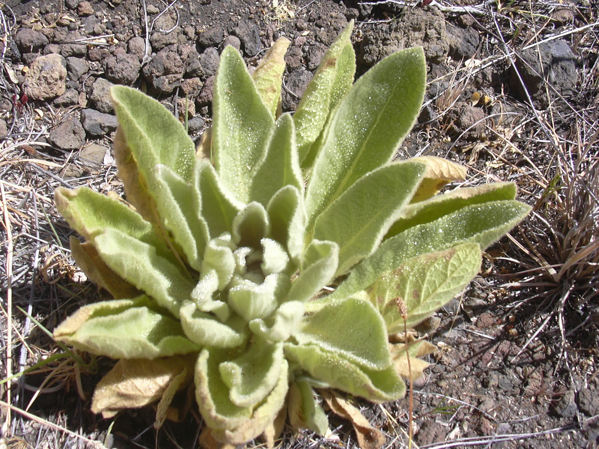
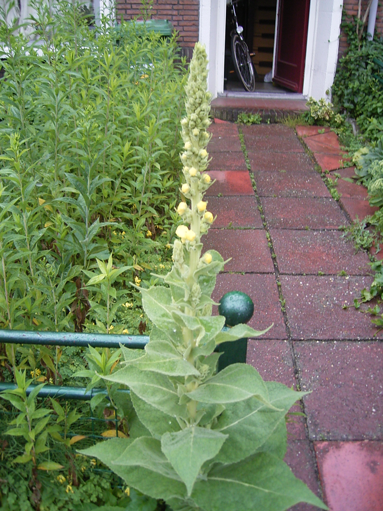

Verbascum thapsus
| common name | mullein | |
| en español | verbasco | |
| plant family | Scrophulariaceae (figwort) | |
| parts used | fresh and dried leaves, flowers, and root |
 from Wikimedia Commons by Forest & Kim Starr, CC BY 3.0
 from Wikimedia Commons by TeunSpaans, CC BY-SA 3.0
observations/description
dried leaf
- small pieces of bright, light sage-green/slightly yellow- or chartreuse-green leaf, thick but airy, with fine clear/white hairs
- vegetal, vaguely spicy aroma, almost of peppers/capsicum
"Verbascum thapsus", Wikipedia
- produces a basal rosette of leaves in its first year of growth
- leaves are large, up to 50 centimeters long
- second-year plants normally produce a single unbranched stem, usually 1–2 meters tall
- the tall, pole-like stems end in a dense spike of flowers that can occupy up to half the stem length
- all parts of the plants are covered with star-shaped trichomes (hairs)
- particularly thick on the leaves, giving them a silvery appearance
- leaves are alternately arranged up the stem
- much variation in leaf shape between the upper and lower leaves on the stem, ranging from oblong to oblanceolate
- they become smaller higher up the stem
- flowers are pentamerous with (usually) five stamen, a five-lobed calyx tube, and a five-petalled corolla, the latter bright yellow
- flowering starts at the bottom of the spike and progressing irregularly upward; each flower opens for part of a day and only a few open at the same time around the stem
distribution/conservation status
"Verbascum thapsus", Wikipedia
- wide native range including Europe, northern Africa, and Asia, from the Azores and Canary Islands east to western China, north to the British Isles, Scandinavia, and Siberia, and south to the Himalayas
- in northern Europe, it grows from sea level up to 1,850 m altitude; in China it grows at 1,400–3,200 m altitude
- introduced throughout the temperate world, and is established as a weed in Australia, New Zealand, tropical Asia, La Réunion, North America, Hawaii, Chile, Hispaniola, and Argentina
- imported very early in the 18th century to the United States and cultivated for its medicinal and piscicide properties
- now found commonly in all the states
- in Canada, it is most common in the Maritime Provinces and southern Quebec, Ontario, and British Columbia, with scattered populations in between
- most frequently grows as a colonist of bare and disturbed soil, usually on sandy or chalky ones; grows best in dry, sandy, or gravelly soils, although it can grow in a variety of habitats, including banksides, meadows, roadsides, forest clearings, and pastures
- no longer considered a serious agricultural weed and is easily crowded out in cultivation, except in areas where vegetation is sparse to begin with, such as Californian semidesertic areas of the eastern Sierra Nevada
- in such ecological contexts, it crowds out native herbs and grasses; its tendency to appear after forest fires also disturbs the normal ecological succession
- although not an agricultural threat, its presence can be very difficult to eradicate and is especially problematic in overgrazed pastures
- legally listed as a noxious weed in the US state of Colorado (class C) and Hawaii, and the Australian state of Victoria (regionally prohibited in the West Gippsland region, and regionally controlled in several others
primary actions
The Yoga of Herbs, p. 131
- expectorant, astringent, vulnerary, antispasmodic, analgesic, sedative
The Modern Herbal Dispensatory, p. 270
- demulcent, expectorant, lung tonic
Spiritual Herbalism, p. 38-9
- antitussive, expectorant, demulcent, diuretic, anti-inflammatory, antispasmodic, antituberculosis, nervine, vulnerary, alterative, astringent, anodyne, antimicrobial, antioxidant, cancer preventative
system affinities
respiratory, nervous, lymphatic
primary uses
The New Age Herbalist, p. 113
- most useful herb for treatment of hoarseness, tight coughs, bronchitis, asthama, and whooping cough
- saponins have expectorant property, while mucilage is soothing
- infusion also reputed to be sedative and can be used for insomnia
- diuretic, allays inflammation of the urinary system and counters irritating effect of acid urine
- medicated (olive) oil with the flowers used for earache and to relieve pain in rheumatic joints
- effective poultice for boils and sores
- infusions should be strained through a cloth to remove the fine hairs on the leaves which can irritate the throat
The Yoga of Herbs, p. 131
- dispels heat and congestion from the lungs and nasal passages
- dispels accumulated kapha, cleanses bronchii and lymphatics
- specific for mumps, earaches, and glandular swelling
- flowers have stronger nervine and analgesic properties
- flower oil powerful anti-inflammatory anodyne
- relieves pain and inflammation of the nerve tissue and allays irritation
- milk decoction before sleep to relieve cough and promote sleep that has been disturbed by cough and congestion
- can be used for insomnia related to breathing issues
- indicated for bronchitis, asthma, hay fever, dyspnea, sinusitis, cough, lung hemorrhage
- astringent/vulnerary action helpful for diarrhea and dysentery
The Modern Herbal Dispensatory, p. 270
- leaves are most commonly used for respiratory complaints
- soothing, hydrating effect on the lungs and contain saponins that loosen mucus
- chronic lung problems like asthma and COPD
- also helpful for colds and coughs, especially dry coughs
- flowers are used to make ear drops for earache
- root is specific for lower back pain and inflammation
Spiritual Herbalism, p. 38-9
- leaves are indicated for lung and bronchial issues, spasmodic coughs, emphysema, bronchitis, sore throat, tuberculosis, nervousness, and insomnia
- flowers are indicated for ear infections, laryngitis, pharyngitis, lymphatic congestion, urinary tract infection, and eczema of the ear
energetics
The Yoga of Herbs, p. 131
- reduces pitta, kapha; increases vāta
- bitter/astringent/sweet taste - pungent post-digestive effect
- cooling
The Modern Herbal Dispensatory, p. 270
- moistening, cooling
Spiritual Herbalism, p. 38-9
- bitter, astringent, sweet, pungent, cool
pharmacology
The New Age Herbalist, p. 113
- saponins, mucilage, gum, volatile oil, flavonoids, glycosides (incl. aucubin)
Spiritual Herbalism, p. 38-9
- mucilage, flavonoids, saponins, essential oils, tannins, glycosides, complex carbohydrates, plant sterols, sugars
contraindications/pharmaceutical interactions/warnings
The Yoga of Herbs, p. 131
- high vāta
The Modern Herbal Dispensatory, p. 270
- leaves and flowers generally considered safe
- seeds contain poisonous substance rotenone
Spiritual Herbalism, p. 38-9
- seeds are toxic
- avoid with high vāta conditions
- only use externally with cancer
preparations
The Modern Herbal Dispensatory, p. 270
- standard infusion
- dried leaf, 30 g: 1 L
- tincture
- fresh root, 1:2, 95% alcohol
- dried root, 1:5, 65% alcohol
- for back issues
- glycerite
- dried leaf, 1:8
- for lung issues
- oil
- fresh flowers
- for ear drops
Herbal Materia Medica, p. 38
- standard infusion
- dried leaf, 1:32
- strong decoction
- dried root, 1:32
- tincture
- fresh flowers, 1:2
- dried flowers, 1:5, 60% alcohol
The Herbal Medicine-Maker's Handbook, p. 110, 115, 155, 192, 200
- hot infusion
- dried leaf, 3-5 g: 8 oz
- decoction
- dried root, 3-5 g: 8 oz
- tincture
- fresh flowers, 1:1, 100% alcohol
- dried flowers, 1:5, 50-60% alcohol
- glycerite
- fresh flowers, 1:2, 80% glycerin
- dried flowers, 1:4, 60% glycerin
- oil
- dried leaves
- fresh flowers
The Yoga of Herbs, p. 79, 131
- hot infusion
- fresh herb, 1:4 (strong)
- fresh herb, 1:8 (moderate)
- cold infusion
- fresh herb, 1:4 (strong)
- fresh herb, 1:8 (moderate)
- powder
- oil
- flowers
dosage
The Modern Herbal Dispensatory, p. 270
- infusion: 4-8 oz, 2-4/day
- tincture: up to 3 mL, 3/day
- glycerite: 2.5-10 mL, 3/day
Herbal Materia Medica, p. 38
- infusion: 2-4 oz, up to 4/day
- decoction: 2-3 oz, up to 4/day
- tincture: 30-90 drops, up to 4/day
The Herbal Medicine-Maker's Handbook, p. 110, 115, 155, 187
- hot infusion: 8 oz, up to 4/day
- decoction: 8 oz, up to 4/day
- tincture: 2-3 mL, up to 4/day
- glycerite: up to 5 mL, 2-3/day
The Yoga of Herbs, p. 92, 131
- hot infusion: 2 oz, 3/day
- cold infusion: 2 oz, 3/day
- powder: 250-500 mg, 3/day
extra information
Spiritual Herbalism, p. 38-9
- flower stalks were dipped in lard and used as torches
- farmers gave mullein to cows to prevent coughing
- indigenous Americans smoked mullein and used it for medicine
- nicknamed 'Quaker rouge' because Quaker girls would rub the leaves on their cheeks to redden them
personal experiences/simples
macerate (1 tbsp: 16 oz, 12 hours), dried leaf
- leaf is extremely fluffy, hard to measure and does not want to submerge
- mucilage releases quite immediately though, reminds me of aloe
- filtered herb through a sieve with cheesecloth to attempt to catch the hairs
- light greenish yellow color
- light, vegetal flavor
- possibly need higher herb:water ratio
- sweet and very savory, very refreshing
- Brassicaceae flavor: mustardy, vegetal
- reminds me of nopales
- thick, dense body
- i feel an openness in my heart/lung space, as well as a little bit of an airheadedness
tisane (1.5 tsp: 12 oz, 10 minutes), dried leaf
- beautiful nuttiness in the aroma, reminiscent of dandelion or nettle leaf, upon adding the hot water, though this dissipated
- again, does the herb:water ratio need to be higher?
- filtered herb through a sieve with cheesecloth to attempt to catch the hairs
- light, sweet flavor; very light and pleasant, slightly nutty
- slight astringency despite it being demulcent
- there is an earthiness undergirding the flavor as well
- sweetness lingers in the mouth
- opening/outward expansion in the chest around the middle of the sternum
- lovely, friend
- would go great with nettles, horsetail, red clover, motherwort
glycerite (1:10, 70% glycerin, 2 weeks), dried leaf
- became a gelatinous, crystalline solid in the jar with some excess liquid
- sweet, earthy aroma, slightly more floral than vegetal, less capsicum/nopales than the dried leaf itself
- deep reddish brown color
- soft texture, immediately feel an expansion/opening in the mouth and in the upper chest
- i thought the immediacy of this experience was not trustworthy, though reviewing previous notes this is consistent with my experience of mullein!
- sweet, vegetal, grounding
witchcraft
Spiritual Herbalism, p. 38-9
- heals by creating space
- opens up a congested and closed-off mind or heart
- softens our approach to allow for reconnection and improved communication
- can help people in denial, who aren't ready/face some blockage or obstacle and refuse to connect to the real issue
- flowers improve listening and foster courageous and empathetic conversation
- helps you get in touch with your authentic inner voice
- planetary influence: saturn, fire, yin
The Witch's Encyclopedia of Magical Plants, p. 220
- used to fend off enchantment
- witches believed to use stalks as torches and for casting spells
- carrying a piece of mullein was believed to protect against enchantment and witchcraft
- used as a charm to see faeries
- used as an amulet to recover children who had been abducted/enchanted by faeries
- used to ward off wild beasts and anything evil
- elements: fire
- astrological influence: aquarius, libra, saturn
recipes
sources
Easely, Thomas and Steven Horne. The Modern Herbal Dispensatory (2016)
Frawley, David and Vasant Lad. The Yoga of Herbs: An Ayurvedic Guide to Herbal Medicine (1986)
Goldberg Blackthorn, Samantha. Ace of Cups Herbal Medicine and Botanical Magic Herbal School (2024)
Green, James. The Herbal Medicine-Maker's Handbook: A Home Manual (2000)
Kynes, Sandra. The Witch's Encyclopedia of Magical Plants (2024)
Mabey, Richard et al. The New Age Herbalist (1988)
Moore, Michael. Herbal Materia Medica, Fifth Edition (1995)
Rose, Karen M. The Art & Practice of Spiritual Herbalism (2022)
"Verbascum thapsus" on Wikipedia. Retrieved 8 May 2025.